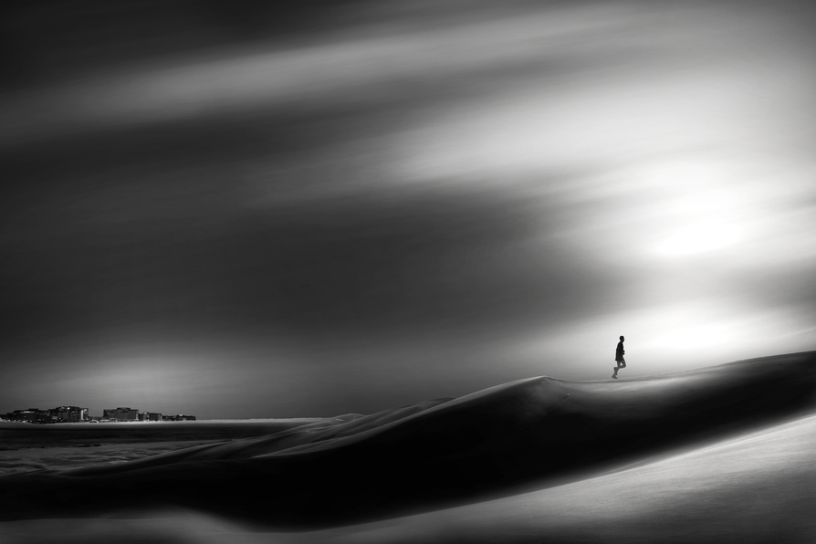
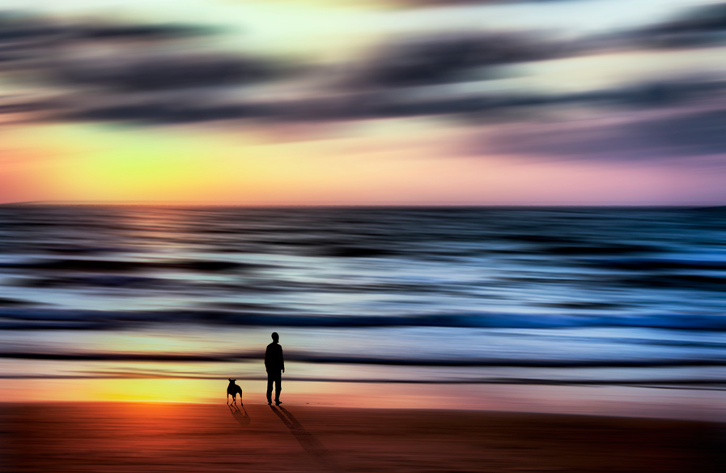
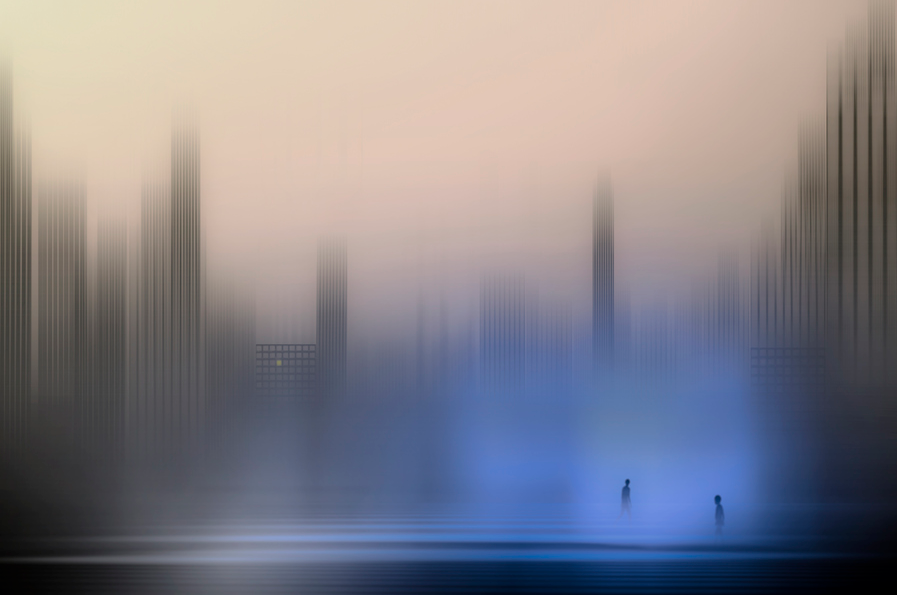

Josh Adamski
“Photography, as a powerful medium of expression and communications, offers an infinite variety of perception, interpretation and execution”. —Ansel Adams
I love the way that photographer Josh Adamski digitally manipulates his shots to give them a highly surreal landscape combined with simple silhouettes. See all of his work at 500px.